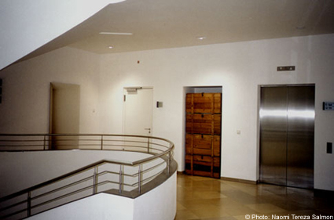

| 
"Replacement", 1999. This Photographic Work binds together findings, the architectural elements of the staircase, as well as a presentation of collection eitems of the Museum into a space installation. Four wooden package crates are stacked in what may seem to be a wall niche constracted especially for them, framed by a door and a lift, of same size and form. These four crates come from a time in 1942 when precious collection eitems were packed to protect them from being destroyed by bombs, and transported to safer places. The story of their manufacture is their actual content, which should be remembered here. Fourty wooden crates for protecting weimar’s most valuable cultural assets were built by inmates at the workshops of the Buchenwald Concentration Camp. 28 of them still exist. In a place, in which all respect and safeguard of human beings was robbed away from them, those whose extermination was a decided fact had to produce packaging for the protection of worthy cultural assets. This presentation pays a memorizing reference, a tribute to those persons. The wall Niche itself, once photographed without the crates, indicates that the narrative wrap alone can not commemoratively fill the empty space created by history, its branding joints in the concience of loss. Close Window All content copyright 2006 Naomi Tereza Salmon - all rights reserved |